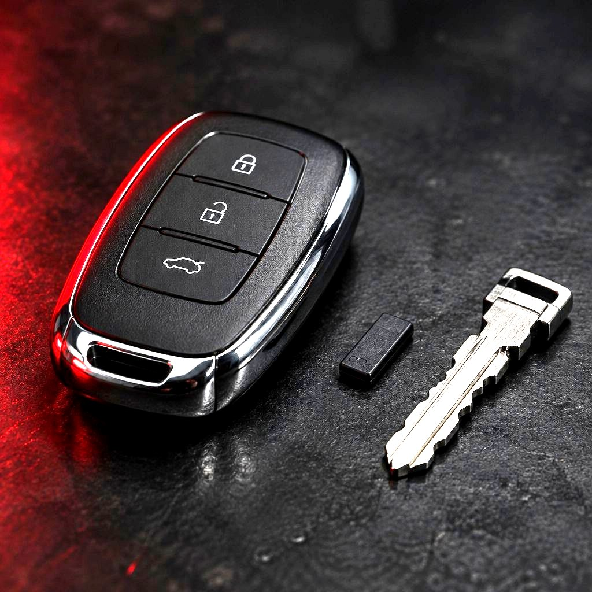
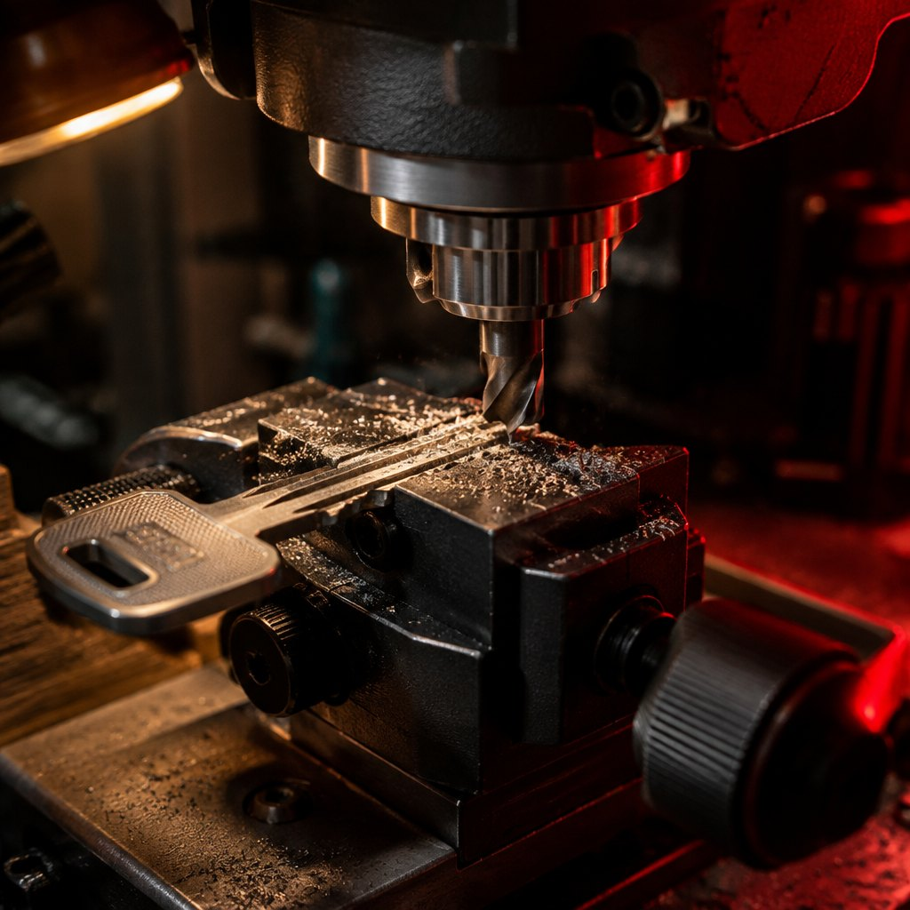
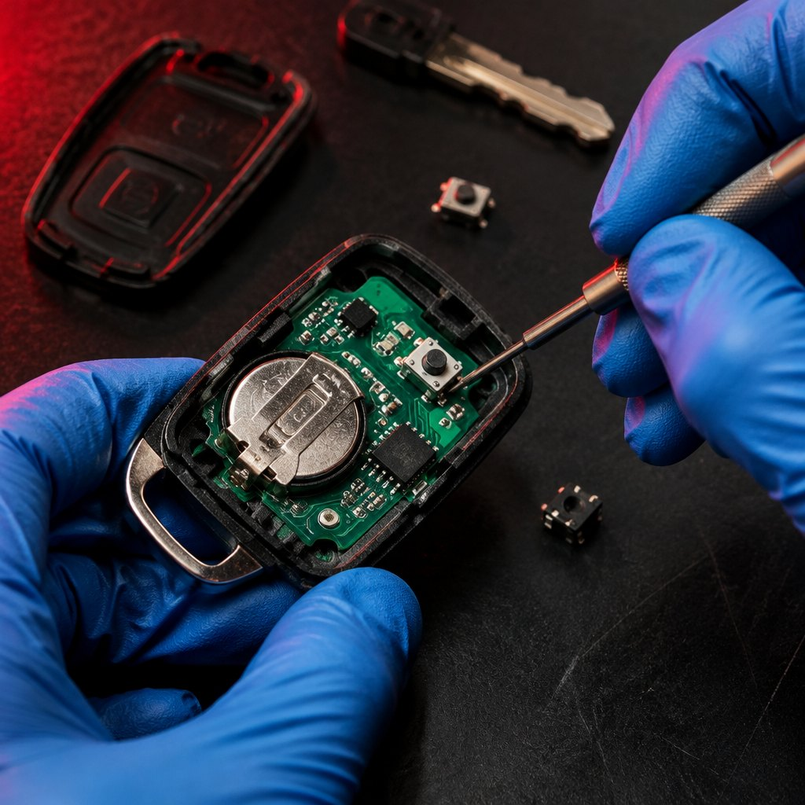

Ключи для авто: изготовим и привяжем
Делаем дубликаты и восстанавливаем утерянные ключи для большинства моделей: выкидные, с кнопками, смарт-ключи и ключ-карты. Привязываем к иммобилайзеру, меняем корпуса, микрокнопки, лезвия и аккумуляторы.
Что мы делаем
От простого дубликата лезвия до смарт-ключа с привязкой к иммобилайзеру. Если не уверены, что нужно именно вам — позвоните, уточним по модели и году.
Изготовление ключа
Режем лезвие по замку и прописываем транспондер: второй ключ, дополнительный комплект или ключ при утере единственного.
Привязка к автомобилю
Прописываем ключ в иммобилайзер через диагностический разъём: Mercedes-Benz, VAG, BMW, Renault и другие марки.
Ремонт ключей
Меняем корпус, микрокнопки, лезвие и аккумулятор, чистим и перепаиваем плату, восстанавливаем контакт батарейки.
Ключи любой сложности
Выкидные, с кнопками, смарт-ключи и ключ-карты Renault: подбираем корпус и плату под ваш автомобиль.
Скажите модель — покажем вариант
Подбор ориентировочный: тип ключа и способ привязки зависят от конкретной комплектации. Точный ответ мастер даёт после проверки по VIN.
Что делаем с ключом
Почему к нам едут из района
Работаем с теми системами, за которые обычно не берутся: свежие VAG на MQB и MLB, BMW с FEM и BDC, Mercedes-Benz до 2014 года.
Ключи любой сложности
Выкидные, с кнопками, смарт-ключи и ключ-карты Renault — держим корпуса и платы под частые модели.
Mercedes-Benz до 2014
Работаем с ключами Mercedes-Benz до 2014 года выпуска, включая восстановление утерянных.
VAG MQB и MLB
Ключи для автомобилей VAG группы, включая платформы MQB и MLB с 2016 года.
BMW все иммобилайзеры
EWS, CAS, FEM, BDC — все типы иммобилайзера BMW.
Как это выглядит
Рабочий стол, станок и программатор. Никакой магии: ключ режется по замку, затем прописывается в автомобиль.




Коротко о главном
Если вашего вопроса тут нет — напишите в WhatsApp, ответим по вашей модели.
Для большинства автомобилей да: привязка нового ключа идёт через уже существующий рабочий ключ. Если ключ единственный или утерян, способ зависит от модели — уточните по телефону.
Обычно в течение дня, при наличии корпуса и чипа под вашу модель. По редким комплектациям срок может быть больше — предупредим заранее.
Автомобиль, документы на него и все имеющиеся ключи. Для привязки машина нужна на месте: прописываем ключ в её иммобилайзер.
Да, для большинства моделей. Способ зависит от системы: где-то достаточно данных по VIN, где-то нужен демонтаж блока.
На изготовление и привязку даём гарантию: если ключ перестал работать не по вашей вине, разберёмся и исправим.
Нужен ключ? Позвоните или напишите
Скажите марку, модель и год — сразу подскажем, какой ключ подойдёт, сколько это стоит и когда можно приехать.